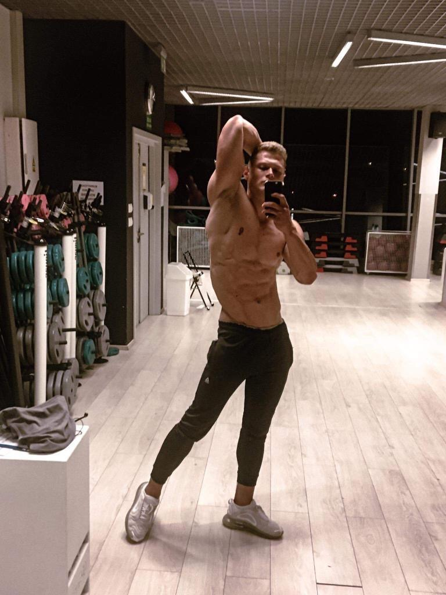

Jestem doświadczonym trenerem personalnym - od ponad 10 lat pomagam ludziom osiągać ich cele treningowe. Trening to nie tylko moja praca, ale przede wszystkim pasja i styl życia, dzięki czemu podchodzę do każdego podopiecznego z pełnym zaangażowaniem.
Posiadam certyfikat trenera medycznego, co pozwala mi bezpiecznie pracować z szerokim spektrum przypadków - od osób rozpoczynających przygodę z siłownią, przez ludzi po kontuzjach i z problemami zdrowotnymi, aż po tych, którzy po prostu potrzebują fachowego wsparcia na starcie.
Specjalizuję się w treningu siłowym, ogólnorozwojowym i motorycznym pod sporty walki. Wśród moich podopiecznych znajdziesz zarówno osoby początkujące, jak i zaawansowanych sportowców, którzy chcą w pełni wykorzystać swój potencjał.
Sam startuję w zawodach men's physique, więc doskonale rozumiem proces zaawansowanej redukcji i budowania formy. To praktyczna wiedza zdobyta na własnym doświadczeniu - wiem, co przynosi realne rezultaty.
Posiadam akredytowany certyfikat trenera medycznego, który uprawnia mnie do bezpiecznej pracy z osobami po kontuzjach, operacjach i z różnymi ograniczeniami zdrowotnymi.
Startuję w zawodach sylwetkowych Men's Physique. Wiem z własnego doświadczenia, jak wygląda zaawansowana redukcja i budowanie formy szczytowej - ta wiedza trafia bezpośrednio do moich podopiecznych.
Przez ponad dekadę pracy jako trener osobisty przeprowadziłem setki podopiecznych przez ich cele - od pierwszego treningu aż po scenę zawodów i podium.
Specjalizuję się w treningu motorycznym pod sporty walki - MMA, kickboxing, BJJ. Przygotowuję zawodników i amatorów do wymagań charakterystycznych dla sportów kontaktowych.
Stawiam na współprace długoterminowe - na start podpisujemy umowę na minimum 3 miesiące. To czas, w którym mogę realnie wpłynąć na Twoje nawyki i podejście do treningów. Każdy plan tworzę indywidualnie, bo każdy człowiek jest inny.
Wspólne treningi pod okiem profesjonalisty - pilnuję techniki, dobieram ćwiczenia i motywuję Cię do postępów. Każdy trening jest dopasowany do Twoich celów: budowy masy mięśniowej, redukcji tkanki tłuszczowej, poprawy siły czy przygotowania motorycznego pod sporty walki. Treningi prowadzę stacjonarnie i online.
Otrzymujesz szczegółowo rozpisany plan treningowy - ćwiczenia, serie, powtórzenia i progresję. Jako certyfikowany trener medyczny dobieram ćwiczenia bezpiecznie, uwzględniając Twoje indywidualne potrzeby i ewentualne ograniczenia zdrowotne.
Na bieżąco śledzę Twoje wyniki i reaguję, gdy jest taka potrzeba. Jeśli coś wymaga korekty - dostosowuję plan. Przy współpracy na 3 miesiące mam wystarczająco czasu, żeby realnie zmienić Twoje nawyki i pomóc Ci osiągnąć trwałe rezultaty.
Każda współpraca przebiega według sprawdzonego schematu, który gwarantuje realne efekty.
Pierwsze spotkanie - poznajemy się, sprawdzam Twój zakres ruchu, kondycję i omawiamy cele. Kosztuje tylko 150 zł i jest podstawą dalszej współpracy.
Na podstawie diagnostyki przygotowuję szczegółowy plan treningowy dopasowany do Twoich celów, możliwości i ewentualnych ograniczeń zdrowotnych.
Trenujemy razem 1, 2 lub 3 razy w tygodniu. Pilnuję techniki, dobieramy odpowiednie obciążenia i sukcesywnie podnosisz swój poziom.
Na bieżąco śledzę Twoje postępy i dostosowuję plan. Masz stały kontakt ze mną między sesjami - jesteś w najlepszych rękach.
Poniżej znajdziesz aktualne ceny moich usług. Im częściej trenujemy, tym mniej płacisz za pojedynczą sesję. Na start podpisujemy umowę na minimum 3 miesiące.
Pierwsze spotkanie - poznajemy się, sprawdzam Twój zakres ruchu i omawiam cele. Na tej podstawie przygotowuję plan działania.
Jednorazowa sesja, bez zobowiązań - jeśli chcesz po prostu spróbować.
4 treningi × 170 zł
Jeden trening tygodniowo - dobry punkt wyjścia, jeśli dopiero zaczynasz lub trenujesz też samodzielnie.
8 treningów × 150 zł
Dwa treningi tygodniowo - wystarczająco regularnie, żeby zobaczyć realne efekty, z czasem na regenerację.
12 treningów × 130 zł
Trzy razy w tygodniu - dla tych, którzy chcą trenować regularnie i intensywnie.
Każdy wariant obejmuje indywidualny plan treningowy i stały kontakt ze mną między sesjami.
„Siedziałem na siłowni od dobrych kilku lat i totalnie utknąłem w miejscu. Znajomy polecił mi Dominika i szczerze - spodziewałem się kolejnego ogólnego planu. A tu zaskoczenie: konkretna analiza, sensowny trening i w końcu prawdziwy progres. W 5 miesięcy przybyło mi jakieś 6 kg mięśni i pierwszy raz naprawdę widzę różnicę."
„Nie ćwiczyłam chyba z 3 lata i kompletnie nie wiedziałam jak się za to zabrać na nowo. Bałam się że będzie za ciężko albo od razu coś sobie zrobię. Dominik zaczął spokojnie od podstaw, wszystko wytłumaczył i ani razu nie poczułam się głupio. Teraz chodzę regularnie i po raz pierwszy mi to po prostu nie odpada."
„Trenuję MMA amatorsko i potrzebowałem czegoś więcej niż zwykłe siłownianie. Dominik od razu zrozumiał o co chodzi i ułożył plan konkretnie pod moje potrzeby. Czuję że jestem szybszy, mocniejszy i już pod koniec walki nie czuję się tak wykończony jak wcześniej. Naprawdę robi robotę."
„Miałam kontuzję kolana i po operacji szczerze nie wiedziałam czy w ogóle wrócę do normalnego ćwiczenia. Fizjoterapeuta polecił mi Dominika i to był strzał w dziesiątkę. Wróciliśmy do treningu spokojnie, bez żadnego forsowania, a efekty przyszły szybciej niż myślałam. Teraz ćwiczę regularnie i bez bólu."
Zawsze zaczynamy od treningu diagnostycznego (150 zł) - to nasze pierwsze spotkanie, podczas którego poznaję Twoje możliwości, zakres ruchu, kondycję i omawiamy razem Twoje cele. Na tej podstawie przygotowuję indywidualny plan treningowy i ustalamy harmonogram dalszej współpracy.
Tak, trening diagnostyczny jest podstawą każdej współpracy. Bez niego nie jestem w stanie dobrze dopasować programu treningowego do Twoich realnych potrzeb i możliwości. To inwestycja, która procentuje przez całą dalszą pracę razem.
Treningi odbywają się w Warszawskim Centrum Atletyki przy ul. Roesler 2 w Warszawie. To świetnie wyposażona siłownia, która zapewnia wszystko, czego potrzebujesz do efektywnego treningu siłowego, ogólnorozwojowego i motorycznego.
Tak! Jako certyfikowany trener medyczny mam doświadczenie w pracy z osobami po kontuzjach, operacjach i z różnymi ograniczeniami zdrowotnymi. Trening diagnostyczny pozwala mi dokładnie ocenić sytuację i zaplanować pracę w taki sposób, żebyś ćwiczył bezpiecznie i efektywnie.
Plan treningowy to szczegółowo rozpisane ćwiczenia, ilość serii i powtórzeń, progresję obciążeń oraz wskazówki techniczne. Każdy element jest dobrany do Twoich celów i możliwości. Plan jest aktualizowany w trakcie współpracy na bieżąco w zależności od postępów.
To zależy od Twojego celu, ale pierwsze wyraźne efekty widać zwykle po 6-8 tygodniach regularnej pracy. Właśnie dlatego zaczynam współpracę od minimum 3 miesięcy - to czas, w którym można realnie zmienić nawyki i zobaczyć trwałe rezultaty, a nie tylko chwilową poprawę.
Tak, stały kontakt ze mną jest wliczony w każdy wariant współpracy. Możesz pisać do mnie z pytaniami dotyczącymi treningu, techniki, regeneracji czy diety - staram się odpowiadać możliwie najszybciej. Nie zostawiam podopiecznych samym sobie między sesjami.
Masz pytania dotyczące treningów lub chcesz rozpocząć współpracę? Napisz do mnie na Instagramie, Facebooku lub zadzwoń - postaram się odpowiedzieć jak najszybciej.
Dominik Maik
📍 Warszawskie Centrum Atletyki, ul. Roesler 2, Warszawa